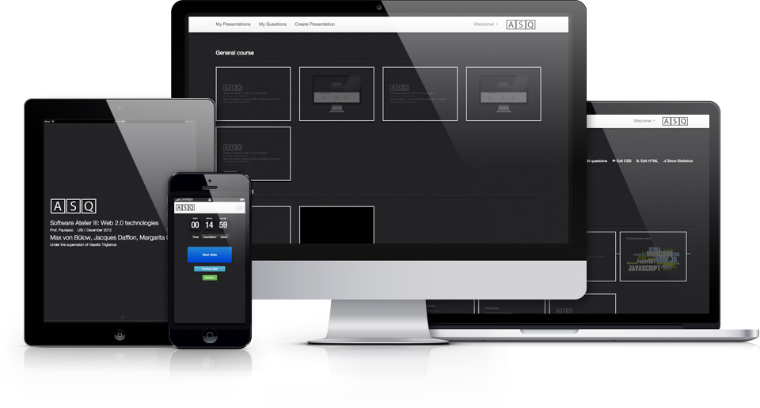

ASQ is a Web application for creating and delivering interactive HTML5 presentations. It is designed to support teachers that need to gather real-time feedback from the students while delivering their lectures. Presentation slides are delivered to viewers that can answer the questions embedded in the slides. The objective is to maximize the efficiency of bi-directional communication between the lecturer and a large audience.
Asq utilizes impress.js for creating presentations and a custom microformat to embed questions. Users can hand-edit their presentations or use the online editor.
Students can connect to the ASQ web-server with mobile tablets or computers. A copy of the slideshow is broadcasted and follow the presentation synchronously with the teacher. By design, the participants have no control over the flow of the presentation shown on their Web browsers.
To track and provide general awareness of the status of the connected users, a map of the audience is shown on the teacher’s tablet. The teacher is in control of the process as the clients send real-time notification about their progress and status.
ASQ logs answered questions together with timing meta-data and displays a statistical analysis about the feedback. This can be shown and discussed with the audience before moving on with the presentation. If participants have a question, they can enter it anytime through ASQ and associate it with the slide that provoked it. The teacher is notified and can decide to go back to the question either immediately or at the end of the lecture.
PhD Student in the Faculty of Informatics at the University of Lugano.
Lead of ASQ
Bachelor student in the Faculty of Informatics at the University of Lugano.
Backend Developer
Bachelor Student in the Faculty of Informatics at the University of Lugano.
Lead of ASQ
Bachelor student in the Faculty for Media-Informatics at LMU Munich.
UX developer
Bachelor student in the Faculty of Informatics and Telecommunications at University of Athens.
Frontend developer
Grab the latest release
Latest release or fork us on github Getting started guide
Email us at asq-info at usi.ch